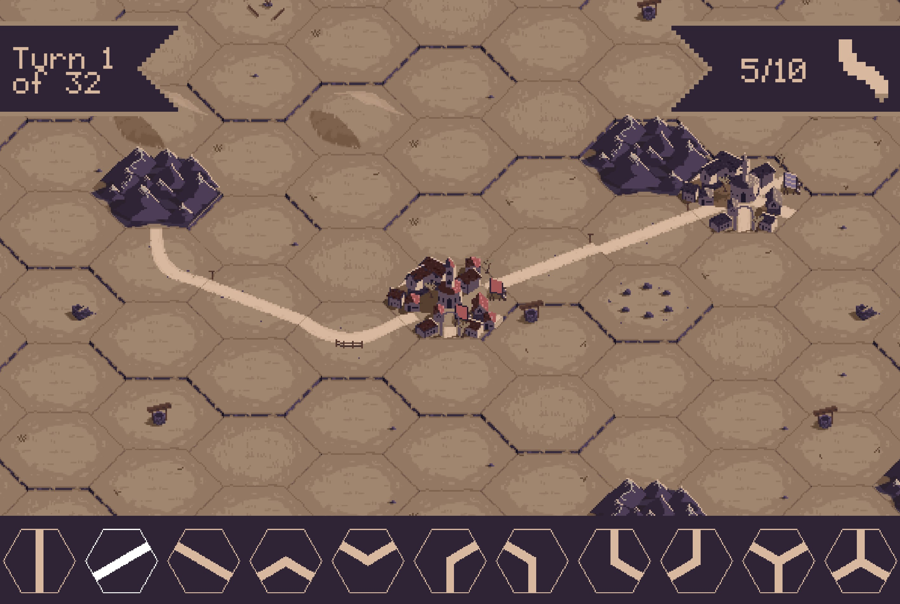

Routes (2023)

Authors
Nikhil Ghosh, Ravi Bhatt, Nicholas Way, Bryce Tyburski
Description
This is an evolution of a 2023 Global Game Jam game turned into an Education 333 (Video Games and Learning) final project. Along with the game itself, the group also produced a document detailing how the
various features served educational goals.
Downloads
Compatibility notes.
2025: Confirmed working in all major browsers.